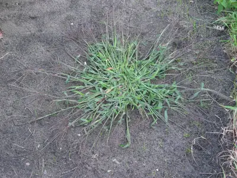

pranet · 出典付きの植物図鑑
hairy crabgrass
Digitaria sanguinalis (L.) Scop. · Poaceae

Digitaria sanguinalis is a species of grass known by several common names, including hairy crabgrass, hairy finger-grass, large crabgrass, crab finger grass, purple crabgrass. It is one of the better-known species of the genus Digitaria, and one that is known nearly worldwide as a common weed. It is used as animal fodder, and the seeds are edible and have been used as a grain in Germany and especially Poland, where it is sometimes cultivated. This has earned it the name Polish millet.
出典: Wikipedia (en): Digitaria sanguinalis · CC BY-SA 4.0
異名: Asperella digitaria Lam., Cynodon praecox (Walter) Roem. & Schult., Dactilon sanguinale (L.) Vill., Digitaria aegyptiaca Willd., Digitaria australis Willd. ex Trin., Digitaria caucasica Henrard, Digitaria eriogona (Schrad.) Link, Digitaria gracilis Guss., Digitaria intermedia Gennari, Digitaria nealleyi Henrard, Digitaria nervosa Roem. & Schult., Digitaria panicea Willd. ex Steud., Digitaria pectiniformis (Henrard) Tzvelev, Digitaria pilosa Pieri, Digitaria plebeia Phil., Digitaria praecox (Walter) Willd., Digitaria sabulosa Tzvelev, Digitaria sanguinaria Steud., Digitaria sanguinea Weber, Digitaria sanguinolenta Edgew. ex Aitch.
同定や利用は自己責任でお願いします。この図鑑だけを根拠に野生の植物を食べないでください。
出典
- 学名: World Flora Online Plant List 2026-06 · CC0 1.0
- 名前: Wikipedia の記事名と Wikidata · CC0 1.0（Wikidata）。記事名は事実
- 説明: Wikipedia (en): Digitaria sanguinalis · CC BY-SA 4.0
- 食用・毒性: World Checklist of Useful Plant Species (Diazgranados et al. 2020, RBG Kew) · CC BY 4.0
- 分布: World Checklist of Vascular Plants (WCVP), RBG Kew, version 2026-06-04 · CC BY 3.0
このページは pranet のデータから自動生成しています。コードは MIT、データは項目ごとのライセンス（説明）。